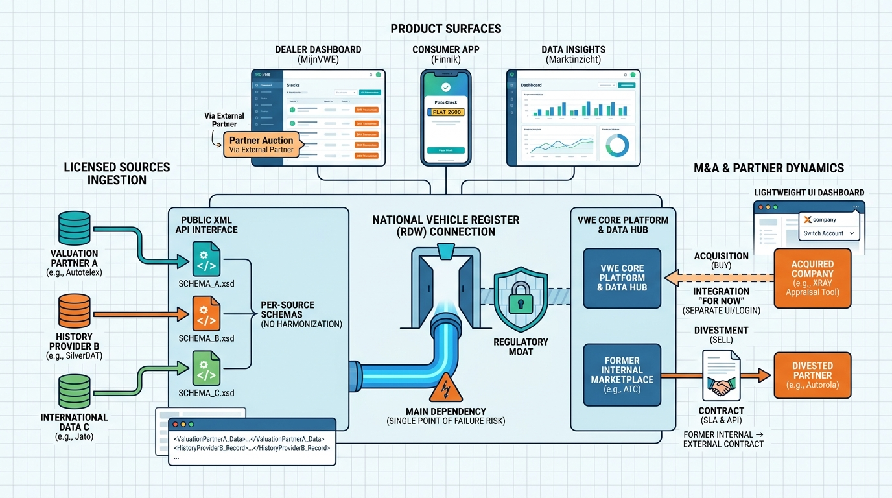

Part X — PRACTICE: How Others Built It
VWE: A Dutch Vehicle Data Company Becomes a Dealer Platform

Image generated by Google Gemini (gemini-3-pro-image-preview)
Part X — PRACTICE: How Others Built It

Image generated by Google Gemini (gemini-3-pro-image-preview)